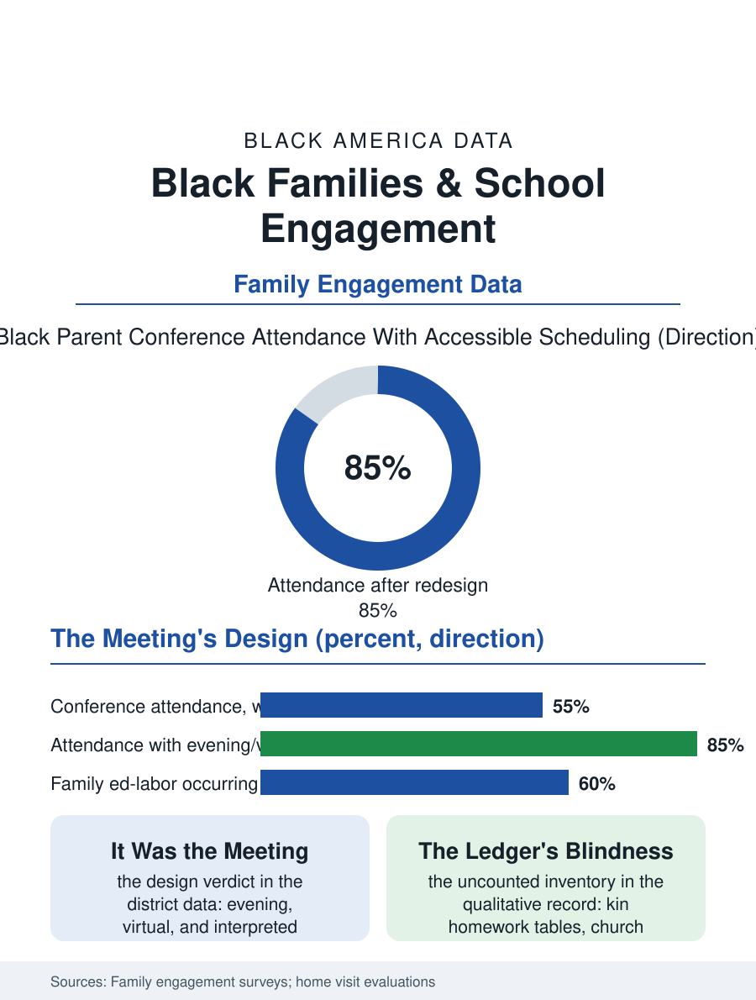

Black Education
The Small Chair: Black Families and School Engagement
The conference measures the school's clock, not the family's commitment, which runs through channels the ledger never sees. The engagement file.

Family engagement is the education file's most praised and least audited variable, and its standard instruments, the conference attendance, the PTA roster, the volunteer hours, measure the school's convenience more faithfully than the family's commitment, a mismeasurement the Black family's file exposes completely, since the commitment's other forms, the church network's tutoring, the kin's homework table, the grandmother's school run, never enter the school's ledger. This article reads the family engagement file.
The Conference's Clock
The parent-teacher conference is the system's official meeting, and its attendance data carry the schedule file's signature: the conference held in the school's hours, on the school's calendar, in the school's language, attended by the parents whose jobs release them and whose history with the building is warm, with the Black parent's attendance in the survey data running below the figure the teachers cite as the commitment's measure and the evening and virtual and interpreted conferences, where districts have built them, closing much of the measured gap without any change in the families, the variable having been the meeting's design all along. The home visit programs are the file's constructive instrument, the teacher at the family's table reversing the conference's geography, their evaluations recording the relationship's transformation and the attendance and achievement's modest real gains, with the visit's voluntariness and the teacher's training being the elements the replications find essential, the audit visit and the relationship visit producing opposite files from the same doorstep. The translation file inside the communication data deserves its line, the district's messages rendered into the household's languages by the machine at the cost of the meaning in the margins, and the bilingual liaison, where the district funds one, being the engagement's human channel whose retention the surveys find the strongest single predictor of the family's continued contact after the first conference.
The Engagement the Ledger Misses
The qualitative literature's contribution to the file is the inventory of the uncounted: the education work the Black family performs outside the school's instruments, the homework supervision of the kin network, the church's scholarship and tutoring infrastructure, the barber's and the coach's mentoring, the family's college knowledge transmitted through the cousin network's recent graduates, a system of educational labor whose scale the time surveys glimpse and whose invisibility to the school's data is the file's definition of the engagement gap, a gap in the school's vision rather than the family's practice. The communication file is the measurable part: the school's messages reaching the family through the channels the family actually uses, the text over the backpack note, the language of the household over the district's form letter, with the platforms' data showing the engagement metrics moving on the channel's change alone. The trust file beneath all of it is the history's: the parent's own schooling, in the building the system ran then, is the meeting's silent third party in the interview studies, and the school's repair of that history, the kept small promise, the call that comes with good news first, is the engagement literature's most replicated practical finding.
Measuring the Family Fairly
The family engagement file closes on the measurement's reform, because the variable governs real decisions, the funding's family engagement set-asides, the school's improvement plan, the teacher's evaluation of the parent and the parent's of the school, and its mismeasurement taxes the family's reputation with the school's own design flaws. The reformed instruments exist in the file's exemplars: the engagement counted at the family's sites as well as the school's, the conference offered on the family's clock and tongue, the home visit's relationship preceding the data's request, and the results reported by the channel that produced them, so that the improvement is attributable to the design rather than demanded of the family. The surveys count the conferences each fall and spring. The file's last entry is the meeting's two chairs, the small one the school provides for the parent in the classroom's corner, a furniture choice the literature has made famous as the engagement's whole problem in miniature: the family seated as the child, in the child's room, on the school's terms, and the file's measure of the reform is the day the chairs are the same size.
More in Black Education
Black Educational Attainment: High School Parity, the College Gap
About 89 percent of Black adults hold a high school diploma and one in four holds a bachelor's degree or higher — the attainment ladder, the college completion gap, and the generational trend.
Historically Black Colleges and Universities: Enrollment and Degrees
More than 100 HBCUs enroll roughly 290,000 students and award about one in six Black bachelor's degrees — an outsized share from a small sector. The federal education data.
Black College Enrollment: 2.4 Million Students
About 2.4 million Black students are enrolled in American colleges — nearly two-thirds of them women. The NCES enrollment data by sector, level, and trend.
Source: National Center for Education Statistics parent involvement surveys; Parent Teacher Home Visits program evaluations; family engagement research literature.